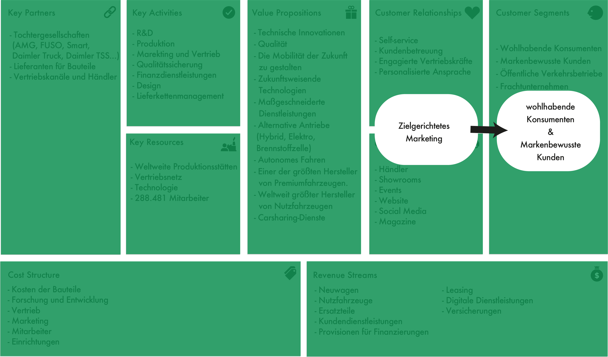
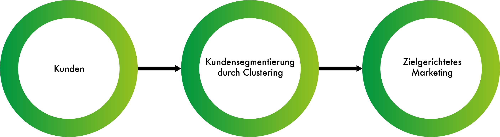

1. Einführung¶
Identifizierung von Usecases¶
Kundensegmentierung für zielgerichtetes Marketing

Auch für Mercedes Benz ist es wichtig, dass sie ein tiefes Verständnis über Ihre Kunden entwickeln, um ihre Kunden dauerhaft binden zu können. In den meisten Fällen leasen die Kunden die Fahrzeuge für 36 Monate und geben sie dann wieder zurück an den Automobilhersteller. Damit die Kundenbeziehung an dieser Stelle nicht endet, ist es besonders wichtig, den Kunden zu kennen. Mit einer zielgerichteten Ansprache an den Kunden, könnte man den Kunden ein neues Fahrzeug bzw. ein neues Angebot unterbreiten, sodass er erneut ein Fahrzeug von Mercedes Benz least. Um solche Marketingaktivitäten umzusetzen, muss vorher eine Kundensegmentierung mittels einer Clusteranalyse durchgeführt werden. Das bringt uns auch schon zu der ersten Problemdefinition.
Erste Problemdefinition¶
Ich erforsche die Kundengruppen, die einen Leasingvertrag bei Mercedes Benz abgeschlossen haben, weil ich herausfinden möchte, ob man die Kunden in homogene Cluster unterteilen kann. Darauf basierend kann das Marketing-Team diese Erkenntnisse für ein zielgerichtetes Marketing nutzen, um die Kundenbeziehungen aufrechtzuerhalten.

Identifizierung von potenziellen relevanten Variablen¶
Für die Kundensegmentierung können unterschiedlichste Daten verwendet werden wie demografische Daten, soziografische Daten sowie das Nutzungsverhalten/Kaufverhalten. In diesem Usecase bin ich jedoch auf ein paar Attribute beschränkt, da keine relevanten Daten gefunden werden können. So stehen mir für die Segmentierung folgende Variablen zur Verfügung:
Alter
Geschlecht
Einkommen
Leasingrate
Definition der Metriken¶
Heuristische Gedanken Wenn man kein Clusterverfahren verwenden würde, würde man die Daten manuell sichten. Dabei wäre es möglich, dass Muster in einem höherdimensionalen Raum unentdeckt bleiben würden und somit nicht identifizierte Kundengruppen nicht zielgerichtet angesprochen werden können.
Model Problem Definition Mit Hilfe eines Clusterverfahrens sollen die bestehenden Kunden segmentiert werden, sodass unterschiedliche Kundengruppen identifiziert und zielgerichtet angesprochen werden. So könnte man das zur Verfügung stehende Marketingbudget effizienter und effektiver einsetzen, um den Kunden beispielsweise ein ähnliches Fahrzeug oder ein neueres Modell in seiner Preisklasse vorzuschlagen.
** Definition der Erfolgsmetriken**
Erfolgsmetriken:
Aufrechterhaltung der Kundenbeziehung
Key results (KR):
10% mehr Leasingabschlüsse bei einem Leasingvertragsende.
Misserfolg des Modells:
Es konnten keine Kundengruppen in den Daten identifiziert werden und somit keine Erkenntnisse für das Marketing zur Verfügung gestellt werden.